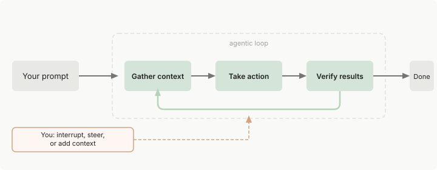
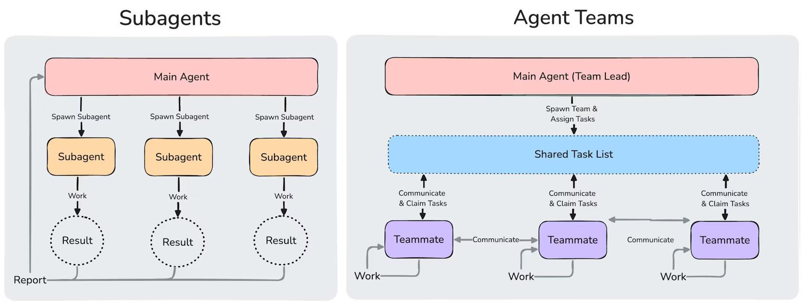

Proposta per l'Adozione dell'Intelligenza Artificiale
A supporto delle attività di sviluppo software e di ufficio
Documento riservato|Versione 1.0|Marzo 2026
Sezione 1
Executive Summary
L'Intelligenza Artificiale generativa ha raggiunto un livello di maturità tale da rappresentare non più una sperimentazione, ma un vantaggio competitivo concreto e misurabile per le aziende che la adottano in modo strutturato.
L'opportunità
I dati di mercato sono inequivocabili: l'85% degli sviluppatori usa già strumenti IA per il coding, il 95% li utilizza almeno settimanalmente, e il 75% affida all'IA più della metà del proprio lavoro di programmazione. Chi non agisce ora rischia di accumulare un divario competitivo difficile da colmare.
La raccomandazione
Dopo un'analisi approfondita delle soluzioni disponibili — inclusi 7 test comparativi su scenari reali — raccomandiamo l'adozione di Claude Enterprise (Anthropic) come piattaforma IA primaria. Claude si distingue per qualità del ragionamento, sicurezza enterprise-grade (Zero Data Retention, SOC2 Type II, HIPAA), e un ecosistema completo che copre sia lo sviluppo software (Claude Code) sia le attività di ufficio (Claude Cowork).
I benefici chiave
Produttività
Fino a +164% di velocità di sviluppo per i nuovi membri del team
Qualità
Riduzione degli errori, standardizzazione del codice, testing come vero valore aggiunto (51.2% dell'impatto)
Sicurezza
Passaggio da Shadow AI incontrollata a un framework governato e sicuro
Crescita del team
Accelerazione dell'apprendimento e maggiore autonomia individuale
La proposta: un rollout progressivo in 3 fasi (pilota, hardening, enterprise) che minimizza il rischio operativo e consente di misurare il ROI ad ogni passaggio. Il costo di una licenza IA è una frazione del costo orario di uno sviluppatore — l'investimento si ripaga già con un modesto incremento di efficienza.
Per i decisori
Sintesi per il C-Level
Questa sezione riassume in un'unica vista i punti chiave per chi deve decidere se e come investire nell'IA, senza entrare nei dettagli tecnici.
Il problema
L'85% degli sviluppatori usa già strumenti IA. Se l'azienda non li fornisce, i dipendenti li usano autonomamente con account personali (Shadow AI), esponendo codice e dati aziendali a servizi esterni senza alcuna garanzia di riservatezza.
Il costo dell'inazione
Il divario competitivo è auto-rinforzante: chi adotta l'IA accumula competenze che accelerano ulteriori benefici. Chi rimane fermo accumula un gap progressivamente più difficile da colmare. Gartner stima una finestra critica di 3-6 mesi per agire.
Il ritorno sull'investimento
Una licenza IA costa meno di 2-4 ore/mese di lavoro di uno sviluppatore. I dati di mercato indicano un risparmio medio di 3.6 ore/settimana per persona. Il ROI è positivo già dal primo mese, anche nello scenario più conservativo.
Il modello corretto
L'IA non serve a ridurre il personale, ma a fare di più a parità di organico: anticipare le deadline, affrontare progetti prima non fattibili e aumentare la qualità del software prodotto.
La proposta in numeri
3 fasi
Rollout progressivo con rischio minimizzato
Pilota → Hardening → Enterprise
+164%
Velocità di onboarding dei nuovi membri
Dati di mercato 2025-2026
51.2%
Dell'impatto IA è nel testing, non nel coding
Il vero valore è la qualità, non la velocità
Perché Claude Enterprise
Criterio
Vantaggio
Sicurezza
Zero Data Retention nativo, SOC2 Type II, ISO 42001, HIPAA — i dati aziendali non vengono mai conservati né usati per l'addestramento
Copertura
Un unico contratto copre sviluppo (Claude Code) e ufficio (Claude Cowork) — nessun competitor offre questa integrazione
Qualità
#1 nel coding agentico (80.9% SWE-bench), scelto dal 71% degli utenti di strumenti agent
Governance
SSO, RBAC, audit log, policy centralizzate — controllo completo su chi usa cosa e come
La decisione richiesta: allocare il budget per 3-5 licenze pilota e autorizzare la revisione di sicurezza. L'investimento iniziale è contenuto, ogni fase produce dati misurabili, e si può interrompere in qualsiasi momento. Ogni giorno di ritardo è un giorno in cui la Shadow AI espone i dati aziendali senza protezioni.
Sezione 2
Contesto di Mercato
L'adozione dell'IA nelle aziende non è più una tendenza emergente: è una trasformazione in corso che sta ridefinendo i parametri di competitività in tutti i settori.
85%
Sviluppatori che usano strumenti IA per il coding
Pragmatic Engineer Survey, 2026
95%
Sviluppatori che usano IA almeno settimanalmente
Developer Survey, 2026
75%
Sviluppatori che affidano all'IA oltre metà del coding
AI Coding Statistics, 2026
Cosa sta cambiando
L'IA generativa sta attraversando una fase di transizione fondamentale: dal modello "chatbot" (domanda-risposta) al modello agentico (pianificazione-esecuzione-verifica). Questo significa che gli strumenti IA non si limitano più a suggerire frammenti di codice o testo, ma sono in grado di:
Analizzare un obiettivo complesso
Pianificare una sequenza di azioni
Eseguire modifiche su larga scala
Verificare i risultati e iterare autonomamente
Per le aziende, questo si traduce in un salto qualitativo: dall'assistenza passiva all'automazione assistita di interi flussi di lavoro.
Il contesto italiano
L'Italia si trova in una posizione critica. Da un lato, la consapevolezza dell'importanza dell'IA sta crescendo rapidamente a livello dirigenziale. Dall'altro, molte organizzazioni sono ancora in fase esplorativa, senza una strategia di adozione strutturata. Questo crea un'asimmetria competitiva significativa: le aziende che adottano ora soluzioni IA mature avranno un vantaggio sproporzionato rispetto a chi rimanda.
L'impatto dell'IA nello sviluppo software va ben oltre la semplice generazione di codice. I dati mostrano che il vero valore risiede nel testing (51.2%), superando la generazione di codice (41.2%). Questo dato sfida la percezione comune e rivela come l'IA sia uno strumento di qualità prima ancora che di velocità.
L'IA come Partner Operativo — vantaggi strategici, ciclo agentico di Claude Code e confronto con l'autocomplete tradizionale
3.1 Risoluzione di problemi tecnici
Gli strumenti IA di ultima generazione sono in grado di supportare gli sviluppatori nella risoluzione di problemi tecnici complessi:
Debugging: analisi rapida di grandi quantità di codice per identificare la causa radice di errori, inclusi scenari difficili come null reference e race condition
Comprensione di codice legacy: navigazione e spiegazione di codebase non documentate, riducendo drasticamente il tempo di onboarding
Suggerimenti architetturali: proposte di pattern e strutture basate sulle best practice del settore
Refactoring su larga scala: modifiche coerenti su decine o centinaia di file simultaneamente, mantenendo la coerenza globale del progetto
3.2 Compensazione delle lacune e crescita del team
Ogni sviluppatore, per esperienza o specializzazione, ha inevitabilmente lacune su specifiche tecnologie, framework o pattern. L'IA funziona come un mentore senior sempre disponibile:
Colma temporaneamente le lacune tecniche, consentendo di lavorare produttivamente anche su tecnologie non familiari
Suggerisce best practice aggiornate e pattern consolidati
Propone soluzioni che lo sviluppatore può approfondire e da cui può apprendere
Questo non sostituisce la competenza dello sviluppatore, ma rappresenta un acceleratore di apprendimento che produce benefici composti nel tempo:
Riduzione del time-to-productivity per i nuovi assunti
Miglioramento progressivo della qualità del codice prodotto dal team
Maggiore autonomia individuale, con meno dipendenza dai colleghi senior per risolvere problemi quotidiani
3.3 Riduzione dei tempi di sviluppo
L'IA consente di ridurre significativamente i tempi necessari per le attività a basso valore aggiunto:
Boilerplate e codice ripetitivo: generazione automatica di strutture standard
Test: creazione di unit test, integration test e test di regressione — l'area dove l'impatto è maggiore
Documentazione: generazione automatica di commenti, docstring e documentazione tecnica
Code review: identificazione proattiva di potenziali problemi prima della revisione umana
Questo libera tempo per le attività ad alto valore: logica applicativa, architettura, e aspetti critici del sistema.
3.4 Il vero valore: il testing
Un dato particolarmente significativo emerge dall'analisi dell'utilizzo di IA nel ciclo di sviluppo:
Attività
Impatto stimato
Testing (unit, integration, regression)
51.2%
Generazione codice
41.2%
Altre attività (docs, review, refactoring)
7.6%
Le aziende che adottano strumenti IA per il solo scopo di "scrivere codice più velocemente" stanno catturando meno della metà del valore potenziale. Il vero punto di forza è la capacità di migliorare la qualità del software attraverso un testing più completo e sistematico.
Sezione 4
L'IA nelle Attività di Ufficio
L'utilità dell'IA non si limita allo sviluppo software. Le soluzioni moderne offrono un supporto significativo anche nelle attività di ufficio quotidiane, con benefici trasversali a tutti i reparti.
Documentazione
Redazione di documenti tecnici, manuali, procedure interne. Composizione di email formali e report strutturati. Standardizzazione della comunicazione aziendale. Traduzione tecnica accurata.
Analisi e sintesi
Riassunto di documenti lunghi e complessi. Analisi di specifiche tecniche e normative. Estrazione di informazioni rilevanti. Confronto e consolidamento di fonti multiple.
Supporto operativo
Preparazione di presentazioni e materiali formativi. Creazione di checklist e procedure operative. Supporto organizzativo per riunioni e progetti. Brainstorming strutturato.
Ogni collaboratore dispone di un assistente disponibile 24/7, in grado di accelerare qualsiasi attività basata su testo e ragionamento.
Sezione 5
Impatto Misurabile sull'Efficienza Aziendale
I benefici dell'adozione dell'IA non sono teorici. I dati raccolti da organizzazioni che hanno già completato il rollout mostrano risultati quantificabili in quattro aree chiave.
5.1 Produttività
+164% di velocità per i nuovi membri del team assistiti da IA, rispetto all'onboarding tradizionale
Riduzione dei tempi di completamento per task standard (boilerplate, test, documentazione)
Aumento del throughput complessivo del team senza aumento dell'organico
5.2 Qualità
Riduzione degli errori: identificazione proattiva di bug, null reference, race condition e codice duplicato
Standardizzazione: codice più uniforme e conforme alle best practice aziendali
Testing più completo: copertura di scenari che spesso vengono trascurati nei test manuali
5.3 Autonomia e velocità di apprendimento
Gli sviluppatori risolvono più problemi in autonomia, riducendo le interruzioni ai colleghi senior
Le nuove tecnologie vengono adottate più rapidamente
Il time-to-productivity dei nuovi assunti si riduce significativamente
5.4 Impatto sull'intero SDLC
L'IA non interviene solo in una fase specifica, ma produce benefici lungo l'intero ciclo di vita dello sviluppo software:
Il Divario Competitivo: Chi Non Adotta l'IA Resta Indietro
I dati di mercato del 2025-2026 convergono su un messaggio univoco: l'adozione di strumenti IA per lo sviluppo software non è più un vantaggio — è il requisito minimo per non perdere terreno. Le ricerche più recenti di Gartner, Deloitte, Stack Overflow, JetBrains e analisti indipendenti delineano un quadro inequivocabile.
L'adozione è ormai la norma, non l'eccezione
84%
Sviluppatori che usano o prevedono di usare strumenti IA
Stack Overflow Developer Survey, 2025
73%
Team di ingegneria che usano IA quotidianamente
Developer Survey 2026 — era il 18% nel 2024
63%
Sviluppatori che usano Claude Code
Da 4% a 63% in 9 mesi (maggio 2025 → febbraio 2026)
Un team di sviluppo senza accesso a strumenti IA opera oggi con uno svantaggio strutturale rispetto alla concorrenza. Non si tratta più di un vantaggio competitivo, ma di table stakes — il minimo indispensabile per competere.
"AI success leads to more AI success, including increased buy-in from employees and management, better understanding of what AI tools can and cannot do, and more ideas for how to use AI to save time and money."
"Those firms that are ahead now will find it relatively easy to stay ahead, especially if they can poach talent from the firms that have fallen behind."
Le aziende che hanno superato la fase pilota stanno entrando in un ciclo virtuoso: i dipendenti sviluppano competenze IA che accelerano l'adozione di nuovi use case, che a loro volta generano ulteriori benefici. Chi rimane fermo accumula un divario che diventa progressivamente più difficile da colmare.
I numeri della produttività
Indicatore
Dato
Fonte
Tempo risparmiato per sviluppatore
3.6 ore/settimana (~187 ore/anno)
Panto AI / analisi di mercato 2026
Pull request in più con IA quotidiana
+60% rispetto a chi non la usa
DX Research, 2025
Task completati in più (team ad alta adozione)
+21%
Faros AI Productivity Paradox Report
Codice merged generato da IA
22% del totale
DX, campione 135.000+ sviluppatori
Incremento produttività nelle fasi build e test
+50%
Analisi di settore 2025-2026
Le previsioni di Gartner: finestra di azione limitata
Gartner ha identificato una finestra critica di 3-6 mesi per i dirigenti delle organizzazioni software per definire la propria strategia di IA agentica. Chi non pianifica lo sviluppo di capacità agentiche rischia di restare indietro rispetto ai concorrenti.
Entro il 2026: il 40% delle applicazioni enterprise integrerà agenti IA specifici per task (dal 5% attuale) — Gartner, agosto 2025
Deloitte: l'esecuzione resta il collo di bottiglia
Il report State of AI in the Enterprise 2026 di Deloitte rivela un paradosso: nonostante l'accelerazione dell'adozione, solo il 40% delle organizzazioni dichiara la propria strategia IA come "altamente preparata". Le lacune più critiche:
Area
Organizzazioni pronte
Strategia IA
40%
Infrastruttura tecnica
43%
Gestione dati
40%
Governance
30%
Prontezza dei talenti
20%
Questo significa che chi si muove ora con un piano strutturato — come quello proposto in questo documento — si posiziona nel gruppo di testa, non nel gruppo di inseguimento.
La crescita esplosiva di Claude Code
Claude Code rappresenta il caso più eclatante di adozione nel settore:
Lanciato a maggio 2025, ha raggiunto $1 miliardo di ricavi annualizzati in 6 mesi — più velocemente di ChatGPT e di qualsiasi altro prodotto software enterprise nella storia
A febbraio 2026 ha raggiunto $2.5 miliardi di ricavi annualizzati, raddoppiando dall'inizio dell'anno
Adozione tra gli sviluppatori passata dal 4% al 63% in 9 mesi
Scelto come strumento preferito per task complessi (refactoring multi-file, architettura, debugging) dal 44% degli sviluppatori — più di GitHub Copilot (28%) e ChatGPT (19%)
8 delle Fortune 10 sono clienti Claude
Il punto di non ritorno si avvicina. Come la trasformazione digitale degli anni 2010, la trasformazione IA della metà degli anni 2020 sta separando le aziende che agiscono da quelle che aspettano. La differenza: questa volta la velocità di adozione è molto più alta, e la finestra per recuperare il divario è molto più stretta.
Non adottare ufficialmente strumenti IA non significa che l'IA non venga utilizzata. Significa che viene utilizzata senza controllo, senza governance e senza sicurezza.
6.1 Shadow AI
L'utilizzo non autorizzato di strumenti IA da parte dei dipendenti, al di fuori delle policy aziendali. La Shadow AI è già una realtà nella maggior parte delle organizzazioni. Quando l'azienda non fornisce strumenti IA ufficiali, i dipendenti utilizzano autonomamente account personali su ChatGPT, Claude, o altri servizi, estensioni browser non autorizzate, e strumenti IA integrati negli editor di codice.
I rischi concreti:
Data leakage: codice proprietario, dati sensibili e informazioni riservate inviati a servizi esterni senza garanzie di riservatezza
Violazioni di compliance: impossibilità di garantire conformità GDPR e normative di settore
Qualità inconsistente: output non verificati che entrano nel codebase o nei documenti ufficiali
Assenza di audit trail: nessuna tracciabilità di cosa viene chiesto all'IA e cosa viene prodotto
6.2 Blind Trust
L'accettazione acritica dell'output generato dall'IA, senza validazione umana. Questo è particolarmente pericoloso quando sviluppatori junior accettano codice generato dall'IA senza comprenderne le implicazioni in termini di sicurezza, performance o manutenibilità.
6.3 Vibe Coding
La pratica di scrivere codice interamente attraverso prompt IA, senza una comprensione profonda di ciò che viene generato. Il Vibe Coding produce:
Debito tecnico accelerato: codice che funziona ma è fragile, non testato e difficile da mantenere
Vulnerabilità di sicurezza: pattern insicuri che sfuggono alla revisione perché "il codice funziona"
Perdita di competenze: atrofia delle capacità tecniche del team nel medio-lungo termine
6.4 La soluzione: Secure Enablement, non divieto
Vietare l'IA genera più Shadow AI. La strategia corretta è l'abilitazione sicura: fornire strumenti IA enterprise-grade con governance integrata, in modo che:
I dati aziendali restino protetti (Zero Data Retention)
L'utilizzo sia tracciabile e conforme alle policy
La formazione garantisca un uso responsabile e consapevole
I framework sicuri favoriscano la produttività senza compromettere la sicurezza
L'IA estende le capacità umane, non le sostituisce. Il ruolo dell'azienda è costruire il contesto sicuro perché questo avvenga.
Sezione 8
La Nostra Raccomandazione: Claude Enterprise
Dopo un'analisi approfondita delle soluzioni disponibili sul mercato, raccomandiamo l'adozione di Claude (Anthropic) come piattaforma IA primaria per l'azienda. Questa raccomandazione si basa su cinque pilastri: qualità del ragionamento, flessibilità dei modelli, ecosistema integrato, sicurezza enterprise-grade e vantaggio organizzativo.
Claude: Produttività e Trasparenza — performance, ecosistema, coordinamento e sicurezza enterprise
Perché Claude per l'Enterprise: Il Caso Strategico
Test comparativi, ROI, sicurezza e strategia di adozione
8.1 Il panorama degli strumenti IA per lo sviluppo
Il mercato degli strumenti IA per lo sviluppo software vale $7.37 miliardi nel 2025 e cresce a un tasso annuo del 35-40%. Cinque strumenti dominano il panorama. Li abbiamo analizzati tutti — inclusi 7 test comparativi su scenari reali — per identificare la soluzione più adatta alle nostre esigenze.
Confronto strutturale
Dimensione
Claude Code
GitHub Copilot
OpenAI Codex CLI
Gemini CLI
Cursor
Architettura
CLI terminale, agentico
Plugin IDE + web + CLI + coding agent
CLI locale + cloud sandbox + app desktop
CLI open source + plugin IDE (Conductor)
IDE dedicato (fork VS Code) + JetBrains
Approccio
Agent-first con subagent, team e hooks
Autocomplete + agent mode + Spaces
Agent con 3 livelli (Suggest/Auto Edit/Full Auto)
Agent con ciclo ReAct + Conductor review
IDE-first con agent, background agent e automazioni
Nota su SWE-bench Verified: OpenAI ha rilevato contaminazione dei dati di training in tutti i modelli frontier testati (GPT-5.2, Opus 4.5, Gemini 3 Flash) e ha smesso di riportare score Verified, raccomandando SWE-bench Pro come benchmark più affidabile. I dati sopra restano indicativi delle capacità relative.
Dai 7 test comparativi condotti su scenari reali e dall'analisi di mercato, emergono i punti di forza distintivi di Claude rispetto alle alternative:
Ragionamento superiore
80.9% su SWE-bench Verified e #1 tra gli strumenti di coding agentico (71% degli utenti agent). Nei nostri test questo si traduce in soluzioni architetturalmente più coerenti, meno errori e capacità di gestire task complessi multi-file in autonomia.
Contesto da 1M token
Finestra di contesto tra le più ampie in produzione (condivisa con Gemini). A differenza dei competitor multi-modello, Claude la sfrutta nativamente nell'agent — permette di analizzare interi progetti senza frammentazione, critico per codebase enterprise complesse.
Sicurezza best-in-class
L'unico con Zero Data Retention nativo e certificazione ISO 42001 (AI management). SOC 2 Type II, HIPAA, GDPR. I dati aziendali non vengono mai utilizzati per l'addestramento.
Ecosistema completo
Un unico abbonamento copre sviluppo (Claude Code) e ufficio (Claude Cowork). Nessun competitor offre questa copertura integrata con un singolo contratto.
Nota di trasparenza: Claude Code è lo strumento più apprezzato dagli sviluppatori (46% "most loved", Pragmatic Engineer Survey 2026) e domina nel coding agentico (71% degli utenti agent). GitHub Copilot mantiene la base installata enterprise più ampia (20M+ utenti, Leader Gartner MQ AI Code Assistants 2025) e offre un tier gratuito competitivo. Cursor è il competitor in più rapida crescita ($2B ARR). La nostra raccomandazione per Claude si basa sulla combinazione di qualità del ragionamento, leadership nel coding agentico, sicurezza enterprise e copertura funzionale.
8.3 Perché non le alternative: valutazione nel nostro contesto
Tutti gli strumenti analizzati sono prodotti validi e in rapida evoluzione. La scelta di raccomandare Claude non nasce da una superiorità assoluta, ma dalla migliore aderenza al nostro contesto specifico: un'azienda manifatturiera italiana di medie dimensioni, con un team di sviluppo ristretto, codebase legacy in .NET/C#, e l'esigenza di coprire sia lo sviluppo software sia le attività di ufficio con un'unica piattaforma governata.
GitHub Copilot: forte nell'ecosistema, debole nel nostro scenario
Copilot è lo strumento con la maggiore base installata e il riconoscimento Gartner più alto. Tuttavia, nel nostro contesto presenta limiti specifici:
Architettura autocomplete-first: Copilot nasce come suggeritore inline. L'agent mode è stato aggiunto successivamente e, nei nostri test, produce risultati meno coerenti su task complessi multi-file — lo scenario che rappresenta il nostro bisogno principale (refactoring di codebase legacy, debugging architetturale)
AGENTS.md non influenza l'autocomplete: le istruzioni personalizzate funzionano solo in agent mode e chat, ma non guidano i suggerimenti inline — la modalità che gli sviluppatori usano più frequentemente. Questo limita la capacità di imporre standard di codice aziendali in modo trasversale
Nessuna copertura ufficio integrata: Copilot copre solo lo sviluppo. Per le attività di ufficio servirebbe un secondo strumento (Microsoft 365 Copilot), con un secondo contratto, una seconda governance e costi aggiuntivi significativi
Zero Data Retention non disponibile: a differenza di Claude, Copilot non offre una garanzia nativa di non-retention dei dati — un punto critico per il nostro requisito di protezione del codice proprietario
Mancanza di ISO 42001 e HIPAA: il profilo di certificazione è meno completo rispetto a Claude sul fronte della governance IA e del trattamento dati sensibili
Cursor: innovativo ma rischioso per l'enterprise
Cursor è il competitor in più rapida crescita e offre un'esperienza IDE eccellente. Ma per un'adozione enterprise strutturata presenta criticità:
Vendor lock-in sull'IDE: Cursor è un fork di VS Code. Adottarlo significa vincolare l'intero team a un IDE specifico controllato da una startup. Se il team usa anche JetBrains Rider (comune in ambito .NET), servirebbero due strumenti paralleli
Profilo di sicurezza incompleto: Cursor non possiede ISO 27001, ISO 42001 né HIPAA. Per un'azienda che tratta dati industriali e potenzialmente sensibili, questo gap è significativo
Startup risk: nonostante la crescita impressionante ($2B ARR), Cursor è un'azienda giovane senza track record enterprise consolidato. Anthropic, pur essendo anch'essa relativamente giovane, ha un profilo di finanziamento ($15B+), clienti Fortune 10 e un programma enterprise strutturato che offre maggiori garanzie di continuità
Nessuna copertura ufficio: come Copilot, Cursor copre esclusivamente lo sviluppo software
OpenAI Codex CLI: potenziale elevato, maturità enterprise da verificare
Codex CLI è open source e tecnicamente promettente (GPT-5.3 raggiunge ~80% su SWE-bench), ma:
ZDR solo via API: la garanzia di non-retention dei dati è disponibile solo tramite l'API diretta, non attraverso i piani consumer o team — un'architettura meno trasparente per la governance
Mancanza di ISO 42001 e HIPAA: profilo di certificazione inferiore a Claude
Ecosistema frammentato: l'offerta OpenAI per l'enterprise (ChatGPT Enterprise + Codex + API) è distribuita su più prodotti con governance separata, a differenza dell'approccio unificato di Claude
Gemini CLI: forte su infrastruttura Google, meno rilevante per noi
Gemini Code Assist è la scelta naturale per aziende già integrate nell'ecosistema Google Cloud. Nel nostro contesto:
Dipendenza da GCP: i vantaggi principali di Gemini (grounding su Google Search, integrazione Vertex AI, FedRAMP) presuppongono un'infrastruttura Google Cloud che non è il nostro stack primario
SWE-bench inferiore: 76.2% vs 80.9% di Claude — un gap significativo proprio sui task di coding agentico complesso che rappresentano il nostro use case principale
ZDR non disponibile: assente dalla matrice di sicurezza, a differenza di Claude
In sintesi: la scelta di Claude non esclude a priori le alternative. Il mercato evolve rapidamente e la strategia prevede una rivalutazione periodica ad ogni fase del rollout. Tuttavia, ad oggi, nessun competitor offre la stessa combinazione di qualità del ragionamento agentico, sicurezza enterprise-grade con ZDR nativo, copertura integrata sviluppo+ufficio e certificazioni complete — tutti requisiti prioritari per il nostro contesto.
Demo pratica: Claude Code vs GitHub Copilot
Per illustrare la differenza concreta tra l'approccio agentico (Claude Code) e l'autocomplete tradizionale (Copilot), abbiamo completato lo stesso task — la creazione di un'app Todo CLI in .NET 9 — con entrambi gli strumenti:
Claude Code
Approccio Agentico
Analisi del task, pianificazione, esecuzione autonoma multi-file. Soluzione coerente end-to-end.
GitHub Copilot
Modalità Autocomplete
Suggerimenti inline riga per riga. Copilot ha ora anche un agent mode, ma l'autocomplete resta la modalità dominante di utilizzo quotidiano.
Caratteristica
Claude Code
GitHub Copilot
Approccio
Agentico: analisi, pianificazione, esecuzione autonoma
Autocomplete: suggerimenti inline riga per riga
ID dei todo
int sequenziali (user-friendly: done 1)
Guid (poco pratico: done 3f2a...b7c4)
Lingua UI
Italiano (contestualizzato)
Inglese (generico)
Struttura codice
Costruttore esplicito, record-style, idiomatico
Prompt originale lasciato come commento, class pubblica
Naming
Nomi concisi e coerenti (Add, Delete, SetDone)
Nomi verbose (AddTodo, DeleteTodo, MarkDone)
Scope
Intero progetto — comprensione semantica globale
File corrente — comprensione sintattica locale
La differenza fondamentale non è solo nella qualità del codice prodotto, ma nel flusso di lavoro: Claude Code comprende l'intero contesto del progetto e produce una soluzione coerente end-to-end, mentre Copilot assiste riga per riga lasciando allo sviluppatore l'onere della coerenza globale.
Case study interno: risoluzione bug nel sistema di visione MBFix
Un primo utilizzo concreto di Claude Code è già stato sperimentato internamente sul progetto MBFix — il sistema di visione per il controllo qualità — per la risoluzione di un bug critico nell'architettura del software. Lo strumento è stato utilizzato a spese personali degli sviluppatori, a dimostrazione della fiducia nel potenziale dello strumento.
Claude Code è stato impiegato per:
Analisi del codice esistente: comprensione rapida dell'intera codebase e delle dipendenze tra moduli
Identificazione dei problemi: individuazione delle cause radice del bug e delle debolezze architetturali (God Object con 8 responsabilità, 15+ campi senza volatile, bug critici nella gestione degli array)
Progettazione di una nuova architettura: decomposizione in 3 layer puliti (TcpClient → ClientAsyril → ucVision), eliminazione completa dell'anti-pattern God Object, riduzione da 55 a 26 stati nella state machine
Scrittura di test automatici: creazione di una suite completa di 91 unit test + 17 integration test con framework dichiarativo, simulatore TCP e reportistica automatica
Generazione del report di valutazione: Claude ha prodotto autonomamente un documento di analisi tecnica dettagliato di oltre 500 righe, con scorecard pesate, confronto dimensionale, inventario file e lista consolidata di issue per severità
4 sett.
Tempo previsto inizialmente
Stima pre-intervento
2 sett.
Tempo effettivo con Claude Code
Riduzione del 50%
4.0 → 9.0
Punteggio qualità /10
Da ucZ9 pre-sprint a ucVision
108
Test automatici scritti
91 unit + 17 integration
Il report di valutazione generato da Claude
Uno degli output più significativi del progetto è il report di valutazione tecnica che Claude Code ha generato autonomamente dopo aver analizzato l'intera codebase. Il documento — oltre 500 righe di analisi strutturata — include:
Analisi architetturale con punteggio: valutazione pesata su 9 dimensioni (architettura, state machine, thread safety, error handling, protocollo, test unit/integration, qualità codice, testabilità)
Confronto dimensionale prima/dopo: tabella comparativa ucZ9 vs ucVision su 12 dimensioni con delta espliciti
Tracciamento bug risolti: mapping di ogni bug identificato nella versione precedente con il suo stato nella nuova implementazione
Lista consolidata issue per severità: 18 issue catalogate (0 critiche, 0 alte, 3 medie, 11 basse, 4 cosmetiche) con componente e descrizione
Inventario completo dei file: ogni file con LOC, numero di test e scopo — visibilità totale sul deliverable
Dimensione
Peso
Punteggio
Architettura e separazione delle responsabilità
20%
9/10
Correttezza state machine
15%
9/10
Thread safety
15%
9/10
Error handling e resilienza
10%
9/10
Implementazione protocollo
10%
9/10
Copertura test (unit)
10%
8/10
Copertura test (integration)
10%
9/10
Qualità codice e naming
5%
9/10
Testabilità e osservabilità
5%
10/10
Questo tipo di analisi — normalmente riservata a consulenti esterni o a code review approfondite che richiedono giorni — è stata prodotta in minuti come parte naturale del flusso di lavoro con Claude Code. La qualità del documento dimostra la capacità dello strumento di operare non solo come generatore di codice, ma come analista tecnico e revisore architetturale.
Il codice sorgente del progetto è disponibile su github.com/marc04AM/5250_mbfix. Questo caso dimostra che il beneficio non si limita a task semplici o demo: Claude Code ha prodotto valore misurabile su un problema reale di produzione, con impatto su architettura, qualità del codice, copertura di test e documentazione tecnica.
8.4 Flessibilità dei modelli
Claude offre una gamma di modelli che consente di ottimizzare il rapporto costo/prestazioni in base alla complessità del task:
Un unico abbonamento enterprise fornisce accesso a un ecosistema integrato:
Claude Code: agente IA per lo sviluppo software, integrato direttamente nel terminale e nell'IDE dello sviluppatore. Opera come un agente autonomo supervisionato, in grado di leggere interi progetti, pianificare modifiche e eseguirle su larga scala
Claude Cowork: interfaccia web e integrazioni per le attività di ufficio, con connessioni native a Slack, Google Drive, Microsoft Teams e GitHub
Video ufficiali Anthropic
Claude Code
Agente IA per lo sviluppo
Presentazione ufficiale di Claude Code: ciclo agentico, comprensione del progetto, modifiche multi-file e workflow da terminale.
Cowork
Collaborazione per l'ufficio
Claude Cowork in azione: analisi di documenti, generazione di contenuti strutturati e integrazioni aziendali.
Excel & PowerPoint
Claude per i fogli di calcolo e le presentazioni
Claude applicato a Excel e PowerPoint: analisi dati, generazione formule, manipolazione di tabelle complesse e automazione di task ripetitivi.
Chrome
Estensione per il browser
Claude integrato direttamente nel browser: assistenza contestuale su qualsiasi pagina web, sintesi di contenuti e supporto alla navigazione.
Per il CTO: Instradamento diretto dei task di programmazione da Slack a Claude Code tramite menzioni @Claude. Democratizzazione della conoscenza: navigazione istantanea di codebase non documentate tramite CLAUDE.md.
Per il CEO: Abbattimento dei silos informativi — Claude recupera il contesto dai documenti aziendali senza caricamenti manuali. Riduzione del time-to-productivity per i nuovi assunti e maggiore retention dei talenti.
8.6 Sicurezza enterprise-grade
La sicurezza è il primo criterio di valutazione per qualsiasi strumento enterprise. Claude soddisfa i requisiti più stringenti:
Requisito
Dettaglio
Zero Data Retention (ZDR)
I dati inviati tramite API non vengono utilizzati per l'addestramento del modello e non vengono conservati
SOC2 Type II
Certificazione sulla sicurezza dei controlli operativi
HIPAA
Conformità per il trattamento di dati sanitari
GDPR
Conformità alla normativa europea sulla protezione dei dati
SAML / OIDC
Single Sign-On tramite il provider di identità aziendale
RBAC
Controllo degli accessi basato sui ruoli
Audit Log
Tracciabilità completa di tutte le interazioni
8.7 Vantaggio organizzativo
Claude non è solo uno strumento di produttività individuale. A livello organizzativo:
Mentoring continuo: Claude funge da mentore senior sempre disponibile, accelerando l'onboarding ed eliminando il lavoro ripetitivo
Crescita del team: gli sviluppatori junior possono lavorare a un livello più elevato, colmando il gap con i colleghi senior
Soddisfazione: la rimozione di task ripetitivi e frustranti aumenta la soddisfazione e la retention del team
Sezione 9
Utilizzo Responsabile dell'IA
L'adozione dell'IA deve essere accompagnata da una chiara cornice di utilizzo responsabile. Tre principi fondamentali guidano il nostro approccio.
L'IA non sostituisce lo sviluppatore
Lo sviluppatore mantiene sempre il controllo sulle decisioni tecniche, la responsabilità sulla qualità e correttezza del codice, e il pensiero critico nella valutazione delle soluzioni proposte. Il ruolo dell'IA è quello di un copilota esperto.
Validazione umana obbligatoria
Nessun output generato dall'IA deve entrare in produzione senza validazione umana. La validazione non è un passaggio burocratico: è il gate di qualità che garantisce che l'IA venga utilizzata come amplificatore delle competenze umane.
Governance basata su educazione e dati
Formazione obbligatoria ("Patente AI") per tutti gli utilizzatori. Monitoraggio dei dati di utilizzo. Revisione periodica delle policy basata su dati reali, non su assunzioni teoriche.
Sezione 10
Strategia di Adozione
Un approccio progressivo e sicuro, articolato in tre fasi, che minimizza il rischio operativo e consente di misurare il ROI ad ogni passaggio.
Fase 1: Pilota (Settimane 1-4)
Obiettivo: validare il valore dello strumento su un gruppo ristretto e raccogliere dati iniziali.
Per il CEO: rischio operativo minimizzato tramite deployment graduale. Ogni fase produce dati misurabili che validano l'investimento prima di procedere alla successiva.
Formazione gratuita offerta da Anthropic
Anthropic mette a disposizione corsi gratuiti per imparare a utilizzare i propri strumenti, accelerando l'onboarding del team senza costi aggiuntivi di formazione:
Il successo dell'adozione verrà misurato rigorosamente su tre dimensioni:
Adozione
KPI
Target
Misurazione
Weekly Active Users (WAU)
70%+ delle licenze attive
Dashboard Anthropic
Frequenza di utilizzo
Utilizzo quotidiano
Log di sistema
Copertura team
100% dei team di sviluppo entro Fase 3
Report interno
Velocità
KPI
Target
Misurazione
Time-to-merge per Pull Request
Riduzione significativa vs baseline
Metriche Git/GitHub
Tempo di completamento task
Riduzione misurabile per task standard
Project management tool
Time-to-productivity nuovi assunti
Riduzione vs onboarding tradizionale
Valutazione manager
Qualità
KPI
Target
Misurazione
Acceptance rate codice IA
Trend crescente
Metriche di utilizzo
Fallimenti CI/CD
Riduzione vs baseline
Pipeline CI/CD
Bug in produzione
Riduzione vs baseline
Bug tracker
Copertura test
Aumento vs baseline
Coverage tool
Per il CTO: monitoraggio continuo della sicurezza e del drift delle policy tramite AI-SPM (AI Security Posture Management). I KPI di qualità sono altrettanto importanti di quelli di velocità.
Sezione 12
Analisi Costi e ROI
Il vero ROI: fare di più, non spendere di meno
Un chiarimento fondamentale: il ritorno sull'investimento in IA non si ottiene riducendo il personale.
Il modello sbagliato è: pago l'IA → licenzio sviluppatori → pago meno per lo stesso lavoro.
Il modello corretto è: pago l'IA → lo stesso lavoro si completa in metà del tempo → il team può fare più lavoro nello stesso tempo, anticipare le deadline e affrontare progetti che prima non erano fattibili.
Il risultato è duplice: l'azienda ottiene più output a parità di organico, e i dipendenti sperimentano una maggiore soddisfazione professionale — completano più lavoro, rispettano (e anticipano) le scadenze, e dedicano più tempo alle attività ad alto valore invece che ai task ripetitivi. L'IA non rimpiazza le persone: moltiplica il valore di ogni persona nel team.
Il confronto economico
Il costo di uno strumento IA va confrontato con il costo dell'alternativa: il tempo dello sviluppatore.
Voce
Costo indicativo
Costo orario sviluppatore (caricato)
40-80 EUR/ora
Licenza Claude Team Standard (mensile, per utente)
$25/mese
Licenza Claude Team Premium con Code (mensile, per utente)
$150/mese
Licenza Claude Enterprise (mensile, per utente)
Personalizzato (trattativa)
Il calcolo è semplice: anche la licenza Team Premium ($150/mese) costa meno di 2-4 ore di lavoro di uno sviluppatore. Se lo strumento fa risparmiare anche solo poche ore al mese per persona, l'investimento è già ripagato. I dati reali mostrano risparmi di 3.6 ore/settimana (~187 ore/anno) per sviluppatore.
Ottimizzazione del consumo
Prompt caching: riutilizzo del contesto tra chiamate consecutive, riducendo il volume di token processati
Scelta del modello appropriato: utilizzare Haiku per task semplici, Sonnet per il lavoro quotidiano, Opus solo quando necessario
CLAUDE.md strutturato: un file di contesto ben scritto riduce la necessità di re-spiegare il progetto ad ogni interazione, risparmiando token
ROI atteso
Considerando un team di 10 sviluppatori:
Scenario
Risparmio stimato
Conservativo (5% efficienza)
~2 ore/persona/settimana
Moderato (15% efficienza)
~6 ore/persona/settimana
Ottimistico (25% efficienza)
~10 ore/persona/settimana
Anche nello scenario conservativo, il ROI è ampiamente positivo già dal primo mese.
Sezione 13
Prossimi Passi
Per avviare immediatamente la Fase 1 (Pilota), sono necessarie tre azioni:
1
Allocazione Budget
Allocazione del budget iniziale per le licenze Team/Enterprise del gruppo pilota (3-5 utenti). L'investimento iniziale è contenuto e consente di validare il valore prima del rollout completo.
2
Revisione Sicurezza
Revisione della documentazione di sicurezza di Anthropic (Trust Center) da parte del team IT/Security. Verifica della conformità con le policy aziendali e le normative applicabili.
3
Kickoff Pilota
Meeting di allineamento con gli ingegneri selezionati per il gruppo pilota. Definizione delle metriche di baseline e degli obiettivi della fase pilota.
Per CEO e CTO: l'obiettivo è passare dallo "Shadow AI" — l'utilizzo incontrollato che sta già avvenendo — al vantaggio competitivo governato. Ogni giorno di ritardo è un giorno in cui i dati aziendali vengono potenzialmente esposti senza protezioni.
Appendici tecniche
Appendice A — Claude Code: Architettura e Funzionamento
Rivolta a sviluppatori e team tecnici che desiderano comprendere nel dettaglio il funzionamento di Claude Code.
Visualizzazioni del ciclo agentico, comprensione semantica, operazioni multi-file e casi d'uso
A.1 Cos'è Claude Code
Claude Code è uno strumento di Intelligenza Artificiale progettato per operare come un agente software autonomo supervisionato dallo sviluppatore. A differenza dei tradizionali strumenti di autocomplete (come Copilot inline), Claude Code:
Legge e comprende interi progetti software, non solo il file corrente
Analizza più file contemporaneamente, costruendo una mappa semantica del sistema
Pianifica e propone modifiche coerenti su larga scala
Genera direttamente modifiche applicabili al codice, non solo suggerimenti
A.2 Il ciclo operativo agentico (Agentic Loop)

L'agentic loop — il ciclo autonomo che distingue Claude Code dagli strumenti tradizionali
L'agentic loop è il meccanismo fondamentale che distingue Claude Code da un semplice assistente di completamento. Non si tratta di una singola richiesta-risposta, ma di un ciclo continuo e autonomo in cui l'agente ragiona, agisce, verifica e itera fino al completamento dell'obiettivo — esattamente come farebbe uno sviluppatore esperto.
Il ciclo si articola in tre fasi che si ripetono:
Gather Context — l'agente raccoglie le informazioni necessarie: legge file sorgente, definizioni di classi, dipendenze, configurazioni, output di comandi terminale. Costruisce una rappresentazione interna del sistema per capire dove e come intervenire.
Take Action — sulla base del contesto raccolto, l'agente esegue azioni concrete: modifica file, crea nuove classi, esegue comandi, installa dipendenze, lancia test. Non suggerisce — fa.
Verify Results — dopo ogni azione, l'agente verifica autonomamente i risultati: controlla che il codice compili, che i test passino, che le modifiche siano coerenti con l'architettura esistente.
Se la verifica rileva problemi, il ciclo riparte automaticamente: l'agente raccoglie nuovo contesto (es. l'errore di compilazione), decide una nuova azione correttiva, e verifica di nuovo. Questo loop continua fino a quando l'obiettivo non è raggiunto o l'agente richiede input umano.
Il ruolo dello sviluppatore: supervisore, non operatore
Lo sviluppatore può intervenire in qualsiasi momento del ciclo per:
Correggere la rotta: "No, usa il pattern Repository, non accesso diretto al DB"
Aggiungere contesto: "Tieni conto che questo servizio gira anche in ambiente Docker"
Raffinare l'obiettivo: "Aggiungi anche i test unitari per i casi edge"
Questo modello di autonomia supervisionata è la differenza chiave: lo sviluppatore passa dal ruolo di operatore (scrivere ogni riga) a quello di supervisore (guidare e validare il lavoro dell'agente).
Esempio pratico: lo sviluppatore chiede "Aggiungi la validazione degli input al controller OrderController". Claude Code autonomamente: (1) legge OrderController e i modelli correlati, (2) identifica tutti gli endpoint senza validazione, (3) implementa la validazione con i DTO appropriati, (4) esegue i test esistenti per verificare che nulla si sia rotto, (5) se un test fallisce, corregge e ri-verifica — il tutto senza ulteriore intervento umano.
Il dettaglio delle 6 fasi interne
All'interno dell'agentic loop, ogni iterazione segue 6 fasi più granulari:
Goal Interpretation: lo sviluppatore fornisce un obiettivo in linguaggio naturale. L'agente traduce questo obiettivo in attività tecniche concrete.
Context Gathering: Claude Code legge i file sorgente, le definizioni delle classi, le dipendenze e le configurazioni del progetto. Costruisce una rappresentazione interna del sistema.
Planning: l'agente genera un piano dettagliato: identificare i punti di intervento, creare nuove classi se necessario, modificare le chiamate esistenti.
Execution: genera le modifiche al codice: modifica di file esistenti, creazione di nuovi file, refactoring.
Validation: verifica la coerenza logica delle modifiche: compatibilità dei tipi, correttezza sintattica, coerenza con l'architettura esistente.
Iteration: migliora i risultati su feedback dello sviluppatore, iterando fino a raggiungere l'obiettivo.
A.3 Comprensione semantica del codice
Claude Code non lavora solo a livello testuale. Costruisce una mappa mentale del sistema che include relazioni tra classi e moduli, flow delle chiamate tra componenti, e responsabilità delle singole componenti.
Impatto pratico: se si modifica la firma di un metodo, Claude Code può aggiornare automaticamente tutti i punti di utilizzo nel progetto, mantenendo la coerenza globale.
A.4 Operazioni multi-file
Una delle caratteristiche più rilevanti è la capacità di operare su molti file contemporaneamente. Claude Code può gestire il refactoring simultaneo di una classe utilizzata in 10, 50 o 100 file, mantenendo la coerenza globale del progetto. Questo tipo di operazione, che richiederebbe ore di lavoro manuale, viene completata in minuti.
A.5 Capacità di reasoning avanzato
Dedurre il comportamento del codice oltre la semplice analisi sintattica
Proporre miglioramenti strutturali basati sulla comprensione del dominio
A.6 Confronto tra approcci: autocomplete, agent IDE e agent-first
Nel 2026 tutti i principali strumenti offrono una qualche forma di agent mode, ma l'architettura di base determina dove ciascuno eccelle:
Caratteristica
Autocomplete (es. Copilot inline)
Agent IDE (es. Cursor, Copilot agent mode)
Agent-first (Claude Code)
Scope
Poche righe nel file corrente
Progetto aperto nell'IDE
Intero progetto + filesystem
Comprensione
Sintattica/locale
Semantica/progetto IDE
Semantica/globale
Modalità
Suggerimento passivo
Agente integrato nell'editor
Agente autonomo da terminale
Pianificazione
Nessuna
Piano per sessione
Piano multi-step con subagent paralleli
Modifica
Singolo punto
Multi-file nell'IDE
Multi-file coordinato + agent teams
Personalizzazione
Non personalizzabile
Rules per progetto
CLAUDE.md + hooks + skills + MCP
A.6.1 Architettura multi-agente: Subagents vs Agent Teams
Un'evoluzione architetturale fondamentale distingue gli strumenti di coding IA di ultima generazione. Esistono due paradigmi per gestire task complessi che richiedono parallelismo:

Subagents (sinistra): modello gerarchico con agenti isolati — Agent Teams (destra): modello collaborativo con task list condivisa
Subagents (es. GitHub Copilot)
Agent Teams (Claude Code)
Architettura
Gerarchica — l'agente principale spawna sub-agenti isolati che riportano i risultati
Collaborativa — un Team Lead assegna task a teammate che comunicano tra loro
Comunicazione
Unidirezionale: main → sub → result. I sub-agenti non comunicano tra loro
Bidirezionale: i teammate si scambiano messaggi, condividono contesto e si coordinano in tempo reale
Coordinamento
Nessuno — ogni sub-agente lavora in isolamento, rischio di conflitti e duplicazioni
Shared Task List con flusso di stato (In Attesa → Rivendicato → In Progresso → Revisione → Completo)
Scalabilità
Limitata — l'agente principale diventa collo di bottiglia nel coordinamento
Elevata — i teammate si auto-organizzano, il Team Lead supervisiona senza bloccare
Analogia
Un manager che assegna compiti a consulenti esterni che non si parlano
Un tech lead con un team affiatato che usa una board condivisa
GitHub Copilot utilizza ancora il paradigma dei subagents: l'agente principale delega task a sotto-agenti che lavorano in isolamento e restituiscono risultati senza coordinamento reciproco. Questo approccio funziona per task indipendenti, ma diventa fragile su refactoring complessi dove le modifiche di un agente impattano il lavoro di un altro.
Claude Code ha adottato fin da febbraio 2026 l'architettura Agent Teams: più agenti che condividono una task list, comunicano tra loro e si coordinano per evitare conflitti. Il risultato è un sistema che scala naturalmente su codebase enterprise, dove le interdipendenze tra componenti sono la norma.
Impatto pratico: su un refactoring che tocca 30 file interdipendenti, i subagents rischiano di produrre modifiche incoerenti (un agente rinomina un metodo, un altro continua a usare il nome vecchio). Gli Agent Teams si coordinano in tempo reale, garantendo coerenza globale.
A.7 Casi d'uso concreti
Creazione di un compilatore C
In uno degli esempi dimostrativi, Claude Code ha supportato lo sviluppo di un compilatore per il linguaggio C: creazione del parser, gestione della sintassi, rappresentazione interna del codice e miglioramento progressivo. Questo dimostra la capacità di supportare progetti di elevata complessità.
Migrazione di sistema di configurazione a JSON
Scenario tipico di refactoring enterprise: Claude Code analizza la configurazione esistente, crea un parser JSON, modifica le classi dipendenti, aggiorna tutti i punti di utilizzo e genera il codice completo — il tutto in un'unica sessione interattiva.
A.8 Limiti tecnici
È fondamentale comprendere i limiti attuali:
Esegue comandi bash e modifica file, ma con livelli di autonomia configurabili dallo sviluppatore (da approvazione singola a modalità completamente autonoma)
La validazione umana resta raccomandata per tutte le modifiche che entrano in produzione — anche in modalità autonoma, i gate CI/CD e le code review fungono da rete di sicurezza
Le performance dipendono dalla qualità del contesto fornito (CLAUDE.md, hooks, skills)
Non ha visibilità sullo stato runtime dell'applicazione in esecuzione, salvo integrazione esplicita tramite MCP o comandi terminale
Lo sviluppatore rimane il supervisore e il decisore finale.
Appendice B — Architettura di Deployment Enterprise
Rivolta a CTO, architetti e team infrastruttura che devono pianificare il deployment di Claude in ambiente enterprise.
Dati di mercato, framework di governance e architettura di deployment
B.1 CLAUDE.md come infrastruttura
Il file CLAUDE.md non è un blocco note: è un layer di coordinamento obbligatorio, versionato tramite Git. Funziona come la "base di conoscenza" che Claude Code consulta per ogni operazione.
Directory .claude/commands/: file markdown per ogni workflow ripetibile. Chiunque esegua /my-skill ottiene un output identico, azzerando le variazioni di prompting tra sviluppatori
Gate deterministici: affidarsi a linter, errori di tipo e gate CI/CD per delimitare gli agenti — un file di contesto è un suggerimento, ma un linter è un muro
Insegnare lo stile di codice aziendale all'IA
Uno degli utilizzi più strategici di CLAUDE.md è la codifica delle convenzioni di stile del codice aziendale: naming convention, pattern architetturali preferiti, struttura dei progetti, regole di formatting, best practice interne e anti-pattern da evitare. Inserendo queste informazioni nel file di contesto, l'IA produce codice che rispetta fin da subito gli standard del team — riducendo il lavoro di code review e garantendo uniformità anche quando sviluppatori diversi usano lo strumento.
In pratica, CLAUDE.md diventa il manuale di stile eseguibile dell'organizzazione: non un documento che gli sviluppatori devono leggere e ricordare, ma un'istruzione che l'IA applica automaticamente ad ogni interazione.
Lavoro già avviato: è stata prodotta una prima bozza interna dei file di configurazione agente, disponibile su github.com/marc04AM/Agents. Questo lavoro preparatorio, realizzato fuori dall'orario di lavoro, costituisce una base concreta da cui partire per la configurazione aziendale durante la Fase 1 del pilota.
B.2 Gestione agenti paralleli (Agent Teams)
Da febbraio 2026, Claude Code supporta nativamente gli Agent Teams: sessioni Claude indipendenti che si coordinano, scambiano messaggi e dividono il lavoro in parallelo. Quando più agenti lavorano sullo stesso progetto, è necessario prevenire conflitti. Le regole di ingaggio:
Flusso di stato: In Attesa → Rivendicato → In Progresso → Revisione → Completo
Subagent isolati: fino a 10 subagent paralleli, ciascuno con prompt, tool e permessi configurabili indipendentemente. Nessun agente può prendere un compito già rivendicato
Nessun stato mutabile condiviso: evitare che gli agenti leggano le note in corso degli altri. L'Agente A produce una specifica JSON, l'Agente B la consuma
PR obbligatorie per tutto: utilizzo di piattaforme come Linear per creare una storia condivisa delle decisioni tecniche, imponendo revisione del codice e test TDD prima di ogni merge
Hooks deterministici: script che si attivano automaticamente a eventi del ciclo di vita (pre/post tool call, avvio/fine sessione) per imporre vincoli non aggirabili via prompting
B.3 Topologia di deployment
Claude per Teams/Enterprise
Provider Cloud Nativi (API)
Setup
Gestione centralizzata, SSO (SAML), dashboard di utilizzo e billing integrato. Nessun setup infrastrutturale
Setup tramite il cloud provider esistente
Amazon Bedrock
—
Setup AWS-nativo tramite policy IAM e tracciamento CloudTrail
Google Vertex AI
—
Setup GCP-nativo con ruoli IAM e Cloud Audit Logs
Microsoft Foundry
—
Integrazione Azure con policy RBAC e Microsoft Entra ID
Best practice: fissare sempre le versioni dei modelli (es. ANTHROPIC_DEFAULT_SONNET_MODEL) per evitare rotture non pianificate con le nuove release.
B.4 Architettura di rete
Per il controllo totale del traffico IA in ambiente enterprise:
Proxy Aziendale: instrada tutto il traffico in uscita per il monitoraggio della sicurezza, l'applicazione delle policy di rete e la compliance
Gateway LLM: servizio intermedio per gestire l'instradamento, abilitare limiti di rate personalizzati, budget centralizzati e autenticazione di team unificata
Integrazione MCP (Model Context Protocol): gestione centralizzata tramite un team di sicurezza che controlla il file .mcp.json per fornire accesso sicuro a log di errore e sistemi interni
B.5 Il playbook esecutivo per un'adozione sicura
Un approccio in 4 step per garantire un'adozione sicura:
Allineamento Sicurezza: coinvolgere l'InfoSec prima dell'acquisizione. Implementare AI-SPM per validazione continua e proxy di rete
Standardizzazione Contestuale: istituire CLAUDE.md a livello di organizzazione e di root del repository come base di conoscenza obbligatoria
Partenza Guidata (Pair Coding): abbandonare la documentazione statica. Affiancare sviluppatori junior ad esperti per calibrare il contesto tramite l'osservazione
Abilitazione Sicura, Non Restrizione: vietare l'IA genera Shadow AI. Costruire framework sicuri che favoriscano la produttività responsabile. L'IA estende le capacità umane, non le sostituisce